| Event and Description | Picture |
| Buwan ng Wika - It was held on August 5, they introduced the events and later on the band Contented played the song Ikot by Over October. They also had QnAs for the students. | 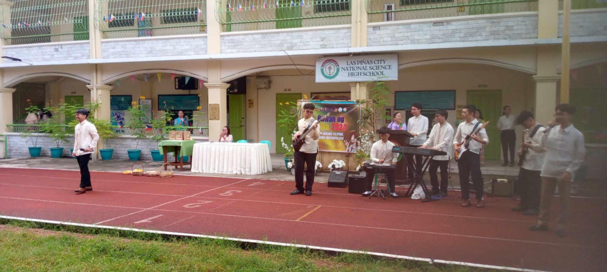 |
| 15th Founding Anniversary @ LPSci - Our school held a foundation day as it marks the fifteenth year of our alma mater. It was really designated for alumnis since this event is what they are waiting for. | 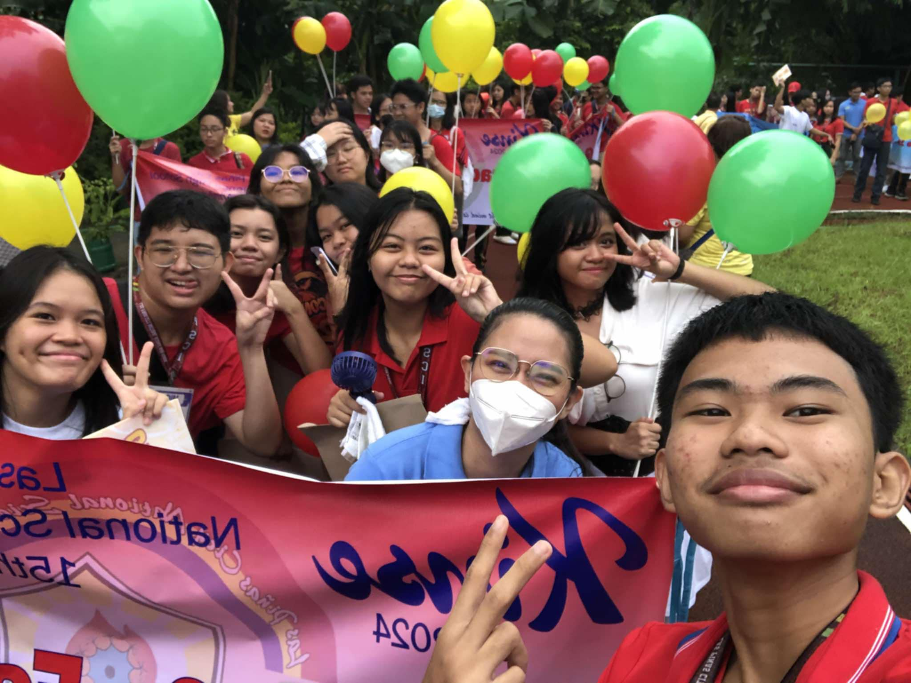 |
| Closing and Awarding Ceremony of Buwan ng Wika - Before the month of August ends, we had the closing of Buwan ng Wika and ASEAN month. The band Contented once again played during the ceremony. My favorite song that they played was Imahe by the band Magnus Haven. After that they awarded all of the students who won the competitions | 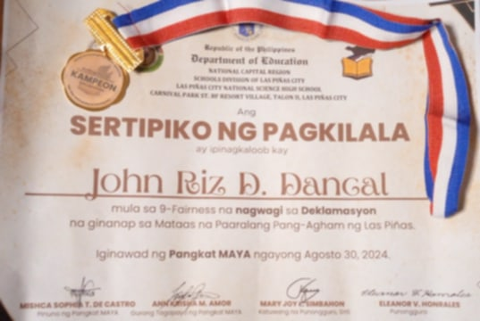 |
Classroom Activities for First Quarter
- Deklamasyon
- Human Simulation Science PT
- Volleyball PT
- Filipino Debate
- Periodicals
Pictures and Videos
| Event and Description | Picture |
| Deklamasyon - I was the representative for our section to compete with other batchmates. I got the champion. Truly it was a great experience. Thanks to the Lord Almighty! | 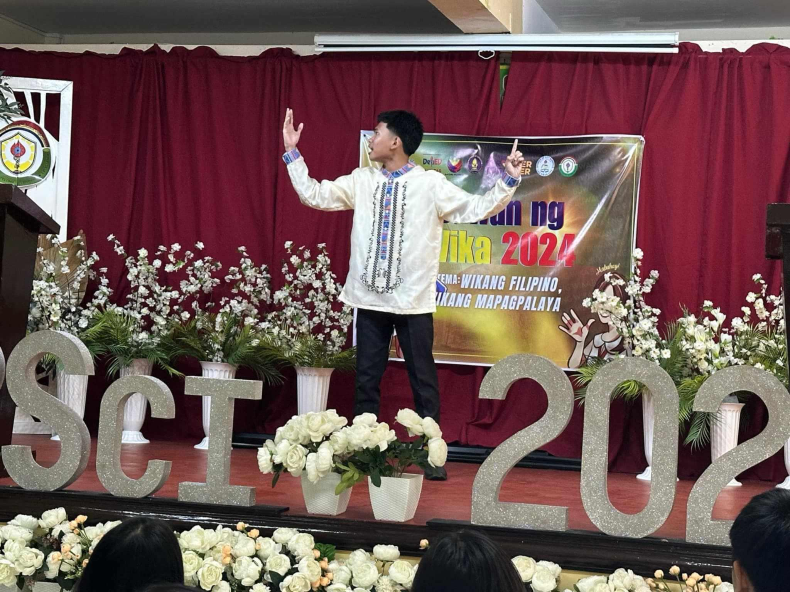 | Human Simulation PT - We had a Performance Task in Science wherein we need to act as the organs in the Circulatory and Respiratory System | 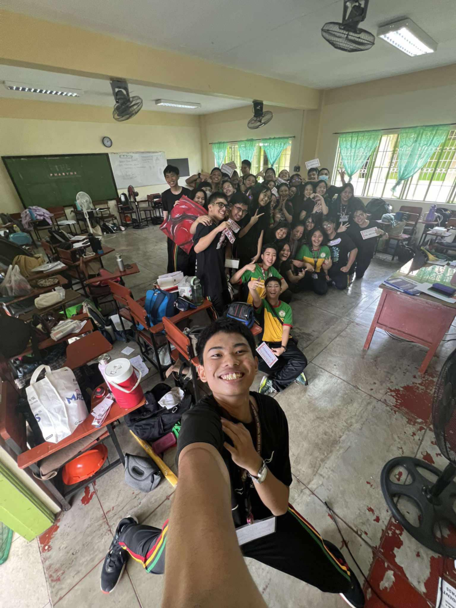 |
| Volleyball PT - We had our Volleyball game and Officiating. We won 2-0 and had a score of 49/50 in officiating. | 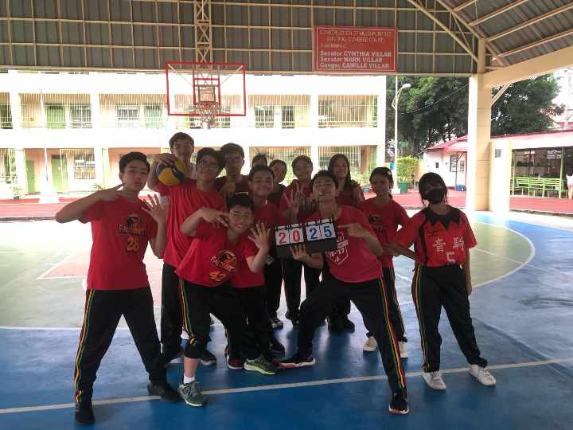 | Periodicals - We had our 3-day Periodical Test. It was indeed very tiring and stressful for me because I was also loaded with activities and competitions. | 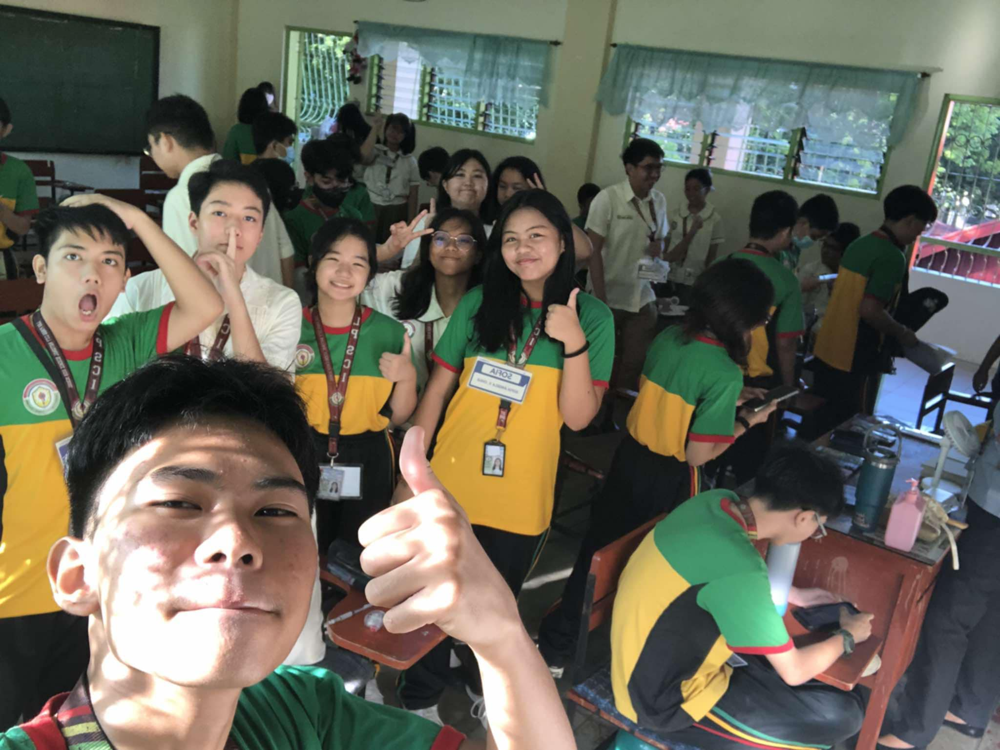 |
Video
MAPEH Music Video
The video was made for us to show the people in our environment that we should take care of it. Want to take a watch? Click this Link!
Browser Outputs

Reflection
First of all, I want to say thank you for everything Mrs. Uminga. Thank you for being there for me and to your students, giving your knowledge to us.May you continue to give your knowledge to others and I know for sure God will give all the blessings you have given to others.
Honestly, I didn't expect that I would learn this much in ICT, I used to sleep during my ICT class both in Grade 7 and 8 since I'm not really a fan of high-technology things and I would prefer staying in traditional ways. But something changed and I liked ICT now unlike the past years. Probably because I took academics seriously and didn't focus that much in sports. I hope to know more about this subject and may apply it in real life.
This subject made me realize that I should open my mind in changes, I should accept and adapt to it. I would like to give thanks to God, my family, to my beautiful, lovely, attractive, gorgeous, stunning, charming, cute, fair, appealing, alluring, delightful, elegant, sweet, pleasant, good-looking teacher, Mrs. Mary Grace Uminga, to my classmates, and a special shoutout to my baks, Ate Jenine Agatha Lim from 10-Commitment. Thank you !!
Reader's Survey Form
Second Quarter E-Portfolio
Events
The photos showed below are the events where the student participated in together with his class.
- Intramurals '24 - '25
- DSTF 2024
- RSTF 2024
- Historical Icon
- Cluster Meet 2024
- Booklandia
Intramurals '24 - '25 - The event was held on October 2 and 3 for the elimination games for Volleyball and the next week are alloted for other games. The student played for the Yellow Bakunawas. He played for both ball games, Volleyball and Basketball. His team placed third for both games. The Yellow Bakunwas won the Second Place Overall for the Intramurals 2024.
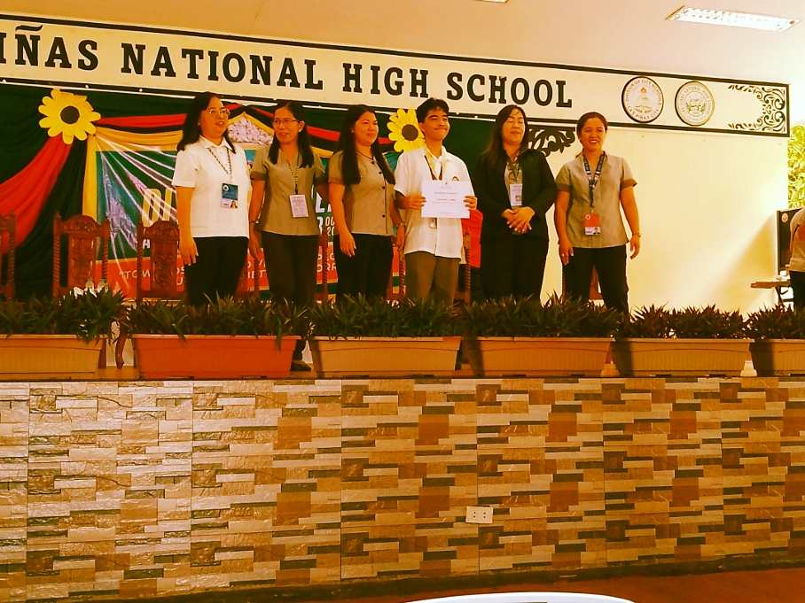
DSTF 2024 - The student participated in the Division Science and Technology Fair together with Jude and Ralph. The student and Ralph are both support teams in the Robotics and Intelligent Machines Individual Category. Jude won the best presenter for their category and them having the first place which leads them to represent the division of Las Piñas for the RSTF 2024.
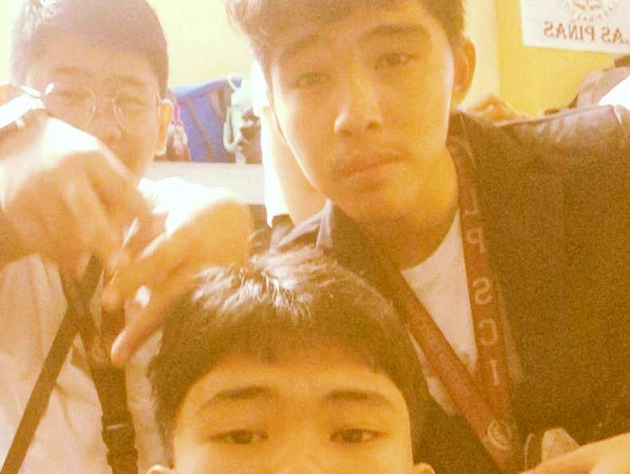
RSTF 2024 - After participating in the DSTF 2024, the student together with his team proceeded in the Regional Science and Technology Fair to represent the City of Las Piñas. The event happened on November 6 to 8.
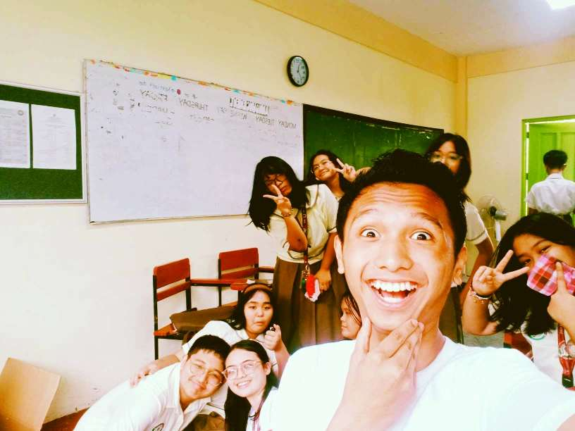
Historical Icon - The student's class had an event in their school for the Araling Panlipunan month dressing up as someone from the history. The event is held on November 7.
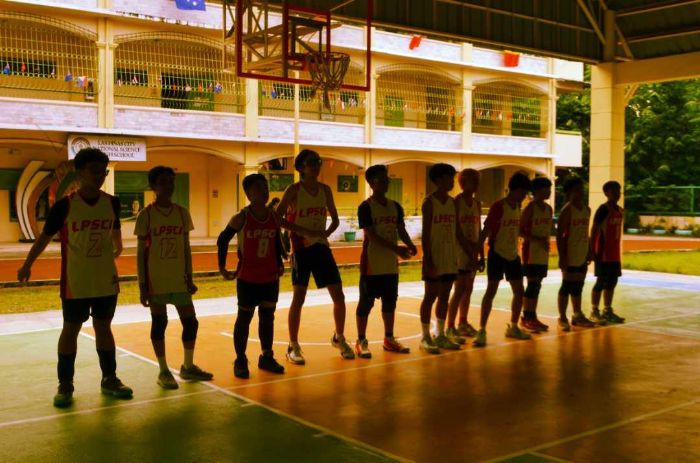
Cluster Meet 2024 - The student represented his school for the Cluster Meet. The student played in the sport Volleyball. It was held on November 14 and 15, his team placed 2nd runner-up.
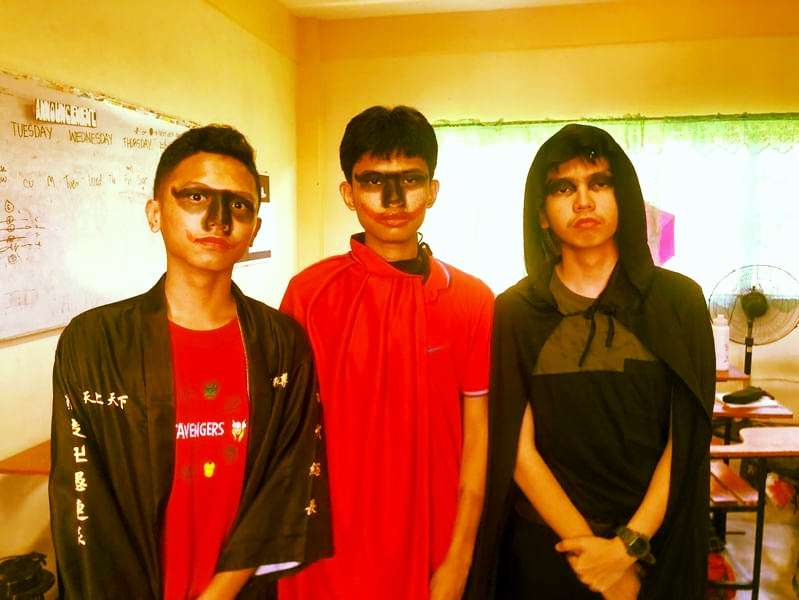
Booklandia - The student's class participated in a school event where two representatives will dress up as a book character. He was one of the extra characters from Fire Nation. The event happened on November 19.
Application of All the Lessons (Browser Outputs and Hands-Ons)
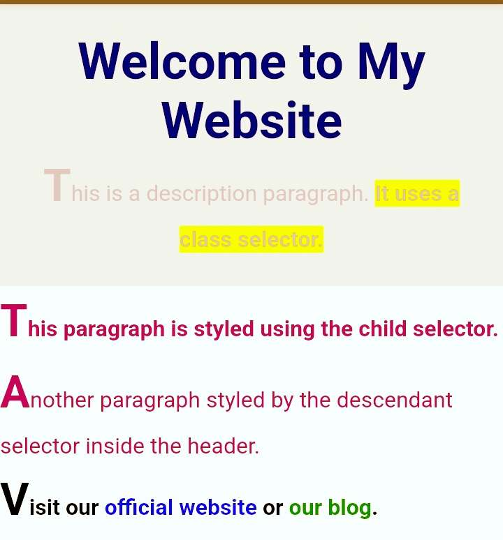Browser Output for Selectors
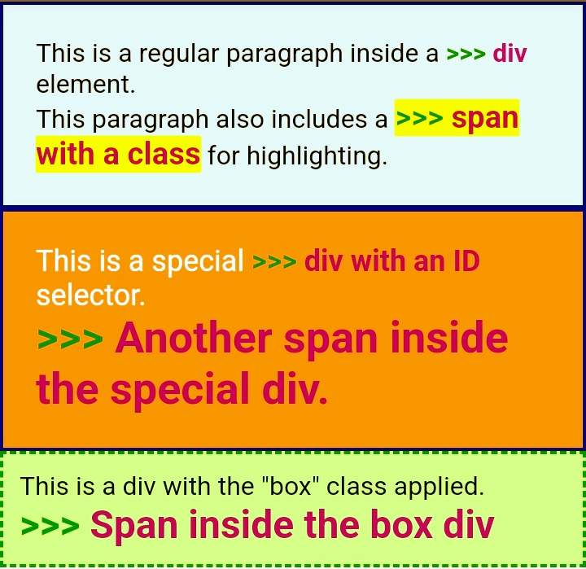
Browser Output for Span and Div
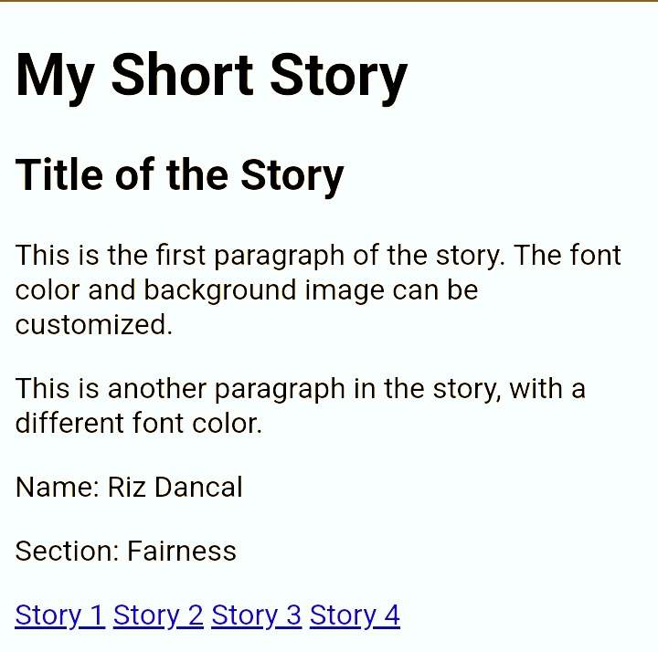
Pairwork done by Me, Jude, and Ralph
Reflections
Even though I had a short time in learning and catching up with the given activities for this quarter, I still learned alot. I would like to thank my classmates, specially my brothers in our class for helping me cope up with our lessons. Learning CSS gave me a new opportunity to learn the other side of coding, it helped me alot to make my electronic portfolio even better. I applied the floating images and even used selectors, span and div, typography, and many more for my outputs. Truly CSS has a great power in coding.
I would like to extend my gratitude to our teacher, Mrs. Uminga for teaching us. She is a very great teacher, she is always considerate to her students, and gives us a reason to smile in her class.
Lastly, I would like to say thank you to my parents, friends, eapecially to Jenine Lik from 10 Commitment and Jhio Marasigan of 10 Imaginative for always being there for me no matter what happens in my life.
I would like to leave a quote from the bible “Do to others as you would have them do to you.” — Luke 6:31.